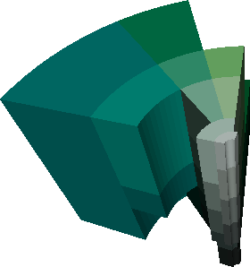
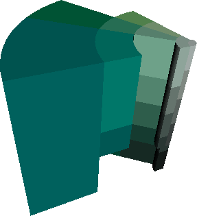

http://orcid.org/0000-0002-3224-8858
http://orcid.org/0000-0002-3224-8858
by Paul Murrell
http://orcid.org/0000-0002-3224-8858
Version 1: Tuesday 06 February 2018

This document
by Paul
Murrell is licensed under a Creative
Commons Attribution 4.0 International License.
This report describes the development of a colour list and colour metric for the 'roloc' package that is based on the ISCC-NBS System of Color Designation.
The 'roloc' package for R (Murrell, 2018a, Murrell, 2018b)
was created to provide tools
for transforming
inscrutable colour specifications into more recognisable colour names.
The colourName() function in the 'roloc' package
can take an R hexadecimal string colour specification, like
"#123456", and produce a matching colour name.
library(roloc) colourName("#123456")
[1] "steelblue4"
However, the colour names that the colourName function
produces are not
always easily comprehensible themselves. For example, in the
following result, the colour name "chartreuse" may not be
meaningful to everyone, let alone the significance of
"chartreuse4" compared to "chartreuse3".
cols <- hcl(c(0, 120, 240), 80, 60) cols
[1] "#E16A86" "#50A315" "#009ADE"
colourName(cols)
[1] "palevioletred2" "chartreuse4" "steelblue2"
Fortunately, the colourName function allows us to
specify our own list of colour names and our own
colour metric for deciding which colour name matches a colour
specification. For example, the HTMLcolours
colour list provides a much smaller set of colour names and
the euclideanRGB colour metric determines colour
matches based on euclidean distance in the sRGB colour space
(Wikipedia, 2018g)
(rather than the default euclidean distance in CIE LUV colour space;
Wikipedia, 2018b).
colourName(cols, colourList=HTMLcolours, colourMetric=euclideanRGB)
[1] "gray" "olive" "teal"
While these colours are much easier to interpret, there is a
danger of obtaining a misleading result. For example, it is not clear that
"grey" is a good description of a colour that
we previously identified as some sort of light red
(palevioletred2
What we need is a list of colours that is sufficiently large so as to provide a reasonable level of accuracy in describing colours, but uses relatively plain descriptive colour names.
This document describes the development of a colour list and colour metric based on the ISCC-NBS System of Color Designation (Wikipedia, 2018d, Judd and Kelly, 1939, Kelly and Judd, 1955), which produces colour names that have simple interpretations.
library(rolocISCCNBS)
match <- colourMatch(cols, colourList=ISCCNBScolours, colourMetric=ISCCNBSblock) colourName(match)
[1] "deep pink" "vivid yellowish green" "brilliant blue"
colourSwatch(match)
The ISCC-NBS System of Color Designation comes from a collaboration between the Inter-Society Color Council (ISCC) and the National Bureau of Standards (NBS) in the 1930s. The aim was to produce a way of designating colours that would be rigorous and reliable enough to be used across a broad range of disciplines and applications, but still be easily understood by the general public.
The ISCC-NBS System describes colours in terms of their hue, using words like pink, red, orange, brown, etc, plus modifiers that relate to the saturation or chroma and the lightness or darkness of the colour, e.g., vivid, brilliant, light, dark, pale, etc.
There are 267 distinct colour names in the ISCC-NBS system, with each colour name corresponding to a "block" of colours (a region of colour space), so that all colours fall into exactly one block and hence correspond to exactly one ISCC-NBS colour name. More precisely, the ISCC-NBS System is defined in terms of the Munsell colour space (Wikipedia, 2018f), so that any Munsell colour specification falls into exactly one ISCC-NBS block and corresponds to exactly one ISCC-NBS colour name.
The images below show two views of a subset of the ISCC-NBS colour blocks in Munsell colour space. Each ISCC-NBS block is filled with a single colour (based on the centroid of the block) to indicate that all Munsell colours within that block correspond to the same ISCC-NBS colour name.
 
In terms of the 'roloc' package, a colour list consists of a set
of colour names, plus a set of sRGB colour specifications, one per
colour name.
Each ISCC-NBS colour name corresponds to a block of colours, rather
than a single colour specification, however, there are published
lists of sRGB centroids for the ISCC-NBS colour blocks
(Nickerson and Newhall, 1941, Texas Precancel Club, 2018).
These sRGB centroids were used to generate the
ISCCNBScolours colour list in the 'rolocISCCNBS'
package.
This colour list allows ISCC-NBS colour names to be used with
existing colour metrics, like euclideanLUV, to
convert colour specifications to ISCC-NBS colour names based on
the distance from the colour specification to the ISCC-NBS centroids.
match <- colourMatch(cols, colourList=ISCCNBScolours) colourName(match)
[1] "deep pink" "vivid yellowish green" "brilliant blue"
We can also produce colour swatches to help visualise the colour match, although this is a bit misleading because the colour of the swatch just represents the centroid of the relevant ISCC-NBS colour block.
colourSwatch(match)
If we use a euclidean metric with the ISCC-NBS colour block centroids to determine distances from colour specifications, we ignore the colour block boundaries, and this can produce some surprising results. For example, the following code obtains colour names for a set of grey colour specifications and the resulting names are not all neutral greys.
colourName(grey(1:4/5), colourList=ISCCNBScolours)
[1] "dark grayish olive green" "dark gray" "purplish gray" [4] "light purplish gray"
Because ISCC-NBS colour names actually correspond to blocks of colour space, a more appropriate colour metric involves determining which colour block a colour specification falls within.
This is the purpose of the ISCCNBSblock colour metric
function in the 'rolocISCCNBS' package.
Conceptually, this function converts each colour specification
into a colour block and then converts each colour in the colour list
into a colour block. The distance between a colour
specification and a colour name is 0 if they are in the same block
or infinity if they are in different blocks.
When combined with the ISCC-NBS colour list, the
ISCCNBSblock colour metric can be more efficient
and just convert each colour specification into a colour block
(because the colour list already corresponds to colour blocks).
If we use both the ISCC-NBS colour list and the ISCC-NBS colour metric, each colour specification corresponds to a single ISCC-NBS colour block and we obtain the ISCC-NBS colour name for that colour block. For example, the ISCC-NBS colour names for a set of sRGB greys are all neutral greys (because they all fall within neutral grey colour blocks in the ISCC-NBS System).
colourName(grey(1:4/5), colourList=ISCCNBScolours, colourMetric=ISCCNBSblock)
[1] "black" "dark gray" "medium gray" "light gray"
The ISCC-NBS colour metric can also be used with other colour lists,
although the results may be more interesting than useful.
For example, the following code performs a colour match using
the ISCC-NBS colour metric with
the HTMLcolours colour list. There are 3 colour
specifications and the colour list contains 16 colours, so the
result is a 3-by-16 matrix, with one row per colour specification
and one column per colour on the colour list.
Two of the colour specifications have no match (all values on the row
are Inf or NA) and one colour specification
has two matches (there are two zeroes in the second row). In the
former case, this means that the colour specification does not
lie within the same ISCC-NBS colour block as any of the colours on the
colour list. In the latter
case, this means that the colour specification is in the same ISCC-NBS
block as two of the colours from the colour list.
There are
NA values in the matrix because some colours in the colour
list have not converted successfully to Munsell colours (the colour
could not be represented in Munsell colour space). For example,
neither "yellow", "navy", nor "blue"
have converted properly. This is partly a limitation of the tools
used to perform the conversion, which will be discussed more later.
match <- colourMatch(cols, colourList=HTMLcolours, colourMetric=ISCCNBSblock) match
$colour
[1] "#E16A86" "#50A315" "#009ADE"
$colourList
$names
[1] "black" "silver" "gray" "white" "maroon" "red" "purple" "fuschia" "green"
[10] "lime" "olive" "yellow" "navy" "blue" "teal" "aqua"
$colours
R G B
[1,] 0.0000000 0.0000000 0.0000000
[2,] 0.7529412 0.7529412 0.7529412
[3,] 0.5019608 0.5019608 0.5019608
[4,] 1.0000000 1.0000000 1.0000000
[5,] 0.5019608 0.0000000 0.0000000
[6,] 1.0000000 0.0000000 0.0000000
[7,] 0.5019608 0.0000000 0.5019608
[8,] 1.0000000 0.0000000 1.0000000
[9,] 0.0000000 0.5019608 0.0000000
[10,] 0.0000000 1.0000000 0.0000000
[11,] 0.5019608 0.5019608 0.0000000
[12,] 1.0000000 1.0000000 0.0000000
[13,] 0.0000000 0.0000000 0.5019608
[14,] 0.0000000 0.0000000 1.0000000
[15,] 0.0000000 0.5019608 0.5019608
[16,] 0.0000000 1.0000000 1.0000000
attr(,"class")
[1] "colourList"
$colourDist
[,1] [,2] [,3] [,4] [,5] [,6] [,7] [,8] [,9] [,10] [,11] [,12] [,13] [,14] [,15] [,16]
[1,] Inf Inf Inf Inf Inf Inf Inf Inf Inf Inf Inf NA NA NA Inf Inf
[2,] Inf Inf Inf Inf Inf Inf Inf Inf 0 0 Inf NA NA NA Inf Inf
[3,] Inf Inf Inf Inf Inf Inf Inf Inf Inf Inf Inf NA NA NA Inf Inf
attr(,"class")
[1] "colourMatch"
The result of this colour match is that, for two of the colour specifications the colour is unknown, but for the other colour specifications there are two colour names that match.
colourNames(match)
[[1]] [1] "unknown" [[2]] [1] "green" "lime" [[3]] [1] "unknown"
colourSwatches(match)
As previously mentioned, this may be more interesting than useful.
Thanks to the existence of sRGB centroids for the ISCC-NBS System,
it was very straightforward to create the
ISCCNBScolours colour list.
However, the development of the
ISCCNBSblock colour metric was less straightforward.
This section details the obstacles involved in creating the
ISCC-NBS colour metric and how they were overcome.
The main problem is that the ISCC-NBS colour metric works in
the ISCC-NBS colour space, which is defined in terms of regions
within Munsell colour space, but the
ISCCNBSblock function is given both a set of colour
specifications and a colour list in terms of sRGB colour space.
This means that
we need a conversion from sRGB colours to Munsell colours
(and on to ISCC-NBS colour
blocks).
One major difficulty with this conversion is that the Munsell colour space is essentially a discrete colour space; there are only known conversions between sRGB and Munsell colours for a finite set of Munsell colours (Rochester Institute of Technology, 2018); there is no general formula.
One way to use this finite set of conversions is to just find the closest match. Two packages were found that performed this sort of sRGB to Munsell conversion: 'munsell' (Wickham, 2016) and 'aqp' (Beaudette et al., 2013). Both of these packages use euclidean distance (within CIE LUV or CIE LAB colour spaces; Wikipedia, 2018e) to determine the nearest Munsell colour match for a given sRGB colour. The problem with this approach is that different sRGB colour specifications will be converted to the same Munsell colour.
colours <- rbind(c(.09, .19, .29), c(.10, .20, .30), c(.11, .21, .31))
library(munsell) rgb2mnsl(colours)
[1] "2.5PB 2/4" "2.5PB 2/4" "2.5PB 2/4"
library(aqp) rgb2munsell(colours)
hue value chroma sigma 1 2.5PB 2 4 0.015824182 2 2.5PB 2 4 0.005134962 3 2.5PB 2 4 0.020058189
Another approach to using this finite set of sRGB-Munsell conversions is to interpolate between the known matches. This approach has been implemented by Paul Centore (Centore, 2012) in several different languages, including R, Octave, and Python. Unfortunately, the R version, the 'munsellinterpol' package (Gama and Centore, 2015), does not appear to work correctly. However, the Python version, the 'colour' package (Mansencal et al., 2017), does work and, with the help of the R package 'reticulate' (Allaire et al., 2017), can be run easily from R.
The function we need from the Python 'colour' package
is called xyY_to_munsell_colour which, as the
name suggests, requires colours in CIE xyY colour space
(Wikipedia, 2018a),
so we must first convert from sRGB to xyY. This can be achieved
using functions from the 'colorscience' package
(Gama, 2017),
as shown below
(notice that we must also perform chromatic adaptation from the
D65 illuminant that is defined for sRGB to the C illuminant
that is used for Munsell colours).
library(colorscience) xyYcolours <- XYZ2xyY(RGB2XYZ(colours, illuminant="C"))
With this approach, different sRGB colours are converted to different Munsell colours; the improvement in resolution of the Munsell colours compared to the nearest-match approach is very clear, particularly in terms of hue.
library(reticulate) colour <- import("colour") apply(xyYcolours, 1, colour$xyY_to_munsell_colour)
Error in py_get_attr_impl(x, name, silent): AttributeError: 'module' object has no attribute 'xyY_to_munsell_colour'
The final step is to convert these Munsell colours to
ISCC-NBS blocks, which can be performed using the functions
MunsellSpecToHVC and
ColorBlockFromMunsell from the
'colorscience' package.
munsellColours <- apply(xyYcolours, 1, colour$xyY_to_munsell_colour)
Error in py_get_attr_impl(x, name, silent): AttributeError: 'module' object has no attribute 'xyY_to_munsell_colour'
ColorBlockFromMunsell(MunsellSpecToHVC(munsellColours))
Error in MunsellSpecToHVC(munsellColours): object 'munsellColours' not found
Unfortunately, the dependence on 'reticulate', to gain access to the Python package 'colour', is a practical obstacle because it means that installation of the 'rolocISCCNBS' package requires the user to install Python (and the Python package 'colour') on their system. However, we can avoid having 'rolocISCCNBS' depend upon 'reticulate' (and Python) if we pre-calculate all sRGB to Munsell (to ISCC-NBS colour block) conversions.
Pre-calculating these conversions is possible because there are only a finite (if large) set of possible sRGB specifications in R. R stores colours using 8 bits each for red, green, and blue components (24-bit colour). This means that there are 16,777,216 (2 to the power of 24) possible colour specifications in R. Every one of those sRGB colour specifications has been converted to an ISCC-NBS colour name and the result is stored in an R character vector in the 'rolocISCCNBS' package (in a known order).
This means that the conversion from sRGB to ISCC-NBS colour name is just a table look up using the integer red, green, and blue components of the sRGB colour specification as an index into the character vector of ISCC-NBS colour names (red + green*256 + blue*256*256 + 1).
This does mean that the 'rolocISCCNBS' package contains an R object
approximately 2.7 MB in size (which takes a few seconds to load
the first time that the ISCCNBSblock function is called),
but it removes the need for a
dependence on the 'reticulate' package (and Python) and
all conversions after the first one are instantaneous.
A good test of how well a colour list performs is to test it on one of the colour scales that different R packages produce. The following example shows that the ISCC-NBS colour list and colour metric perform quite well on a relatively complex colour scale produced by the 'pals' package (Wright, 2017).
options(roloc.colourList=ISCCNBScolours, roloc.colourMetric=ISCCNBSblock) library(pals)
Error in library(pals): there is no package called 'pals'
colourSwatch(stepped())
Error in stepped(): could not find function "stepped"
The purpose of the 'rolocISCCNBS' package is to support conversions from R colour specifications to colour names using the ISCC-NBS System of Colour Designation. This works reasonably well, although the package is relatively large because of a character vector of pre-calculated sRGB-to-ISCC-NBS-block conversions and, for the same reason, the first conversion is relatively slow.
One weakness in the conversion is the fact that the
sRGB-to-ISCC-NBS-block conversions are not always successful
(because the conversions make use of the xyY_to_munsell_colour
function from the Python package 'colour' and that function
does not always succeed).
For example, the conversion does not work for very dark colours ...
colour$xyY_to_munsell_colour(XYZ2xyY(RGB2XYZ(c(0, 0.1, 0.1), illuminant="C")))
AttributeError: 'module' object has no attribute 'xyY_to_munsell_colour'
... in other cases the iterative search within
xyY_to_munsell_colour does not converge on a solution ...
colour$xyY_to_munsell_colour(XYZ2xyY(RGB2XYZ(c(1, 1, 0), illuminant="C")))
AttributeError: 'module' object has no attribute 'xyY_to_munsell_colour'
... and there are some sRGB colours that are outside the MacAdam limits (for illuminant C; Wikipedia, 2018c) ...
colour$xyY_to_munsell_colour(XYZ2xyY(RGB2XYZ(c(0, 0, 1), illuminant="C")))
AttributeError: 'module' object has no attribute 'xyY_to_munsell_colour'
In these cases, the ISCCNBSblock colour metric
will produce an NA
value (as we saw in the Section An ISCC-NBS colour metric), which
may in turn result in either "unknown" or, in extreme
cases, NA as the colour name.
A possible resolution for
the MacAdam limit problem is to clamp invalid sRGB values to the
nearest Munsell colour (though this is not currently supported by the
xyY_to_munsell_colour function).
A possible solution for the dark colour problem
and for situations where xyY_to_munsell_colour
does not converge could be to use a different sRGB-to-Munsell conversion.
These include the more approximate conversions provided by the
'munsell' and 'aqp' packages, plus there are other published
algorithms without (public/open) software implementations
(ASTM, 2014, Simon and Frost, 1987)
The 'rolocISCCNBS' package provides a colour list and a colour metric
for the 'roloc' package that allows colour specifications to
be converted into colour names that are based on the ISCC-NBS
System of Colour Designation. The colour list is provided as the
R object 'ISCCNBScolours' and the colour metric is provided
as the function 'ISCCNBSblock'; the former can be specified
in the 'colourList' argument in calls to the colourName
function from the 'roloc' package,
and the latter can be specified in the 'colourMetric'
argument to that function.
The examples and discussion in this document relate to
version
0.1 of the 'rolocISCCNBS' package,
version
0.1 of the 'roloc' package, and
version
1.0.5 of the 'colorscience' package (which is a fork of the
original 'colorscience' package to include a bug fix for XYZ2xyY and
a vectorised version of ColorBlockFromMunsell).
This report was generated within a Docker container (see Resources section below).
The author would like to thank Ken Knoblauch, Graham Finlayson, and Philip Green for expert pointers and advice on colour, particularly for conversions to and from the Munsell colour system.
Murrell, P. (2018). "An ISCC-NBS Colour List for 'roloc'" Technical Report 2018-02, University of Auckland. [ bib ]
This document
by Paul
Murrell is licensed under a Creative
Commons Attribution 4.0 International License.